Local partners lead
We operate with Guatemalan surgeons at Centro Médico Renacer and support local staff year-round, so care continues after we fly home.

Our story
Founded 2018 · Coeur d'Alene, Idaho
It began with one trip in 2007. Mike Oswald, a CRNA from Coeur d'Alene, joined a medical mission to Guatemala and kept going back. Each time he saw the same thing: skilled Guatemalan doctors and patients waiting for surgery, held back by too few hands, medicines and instruments. In 2018 he and ophthalmologist Dra. Vicky Loza founded ALMA to close that gap, sending volunteer teams to work beside local doctors serving indigenous communities.
Since 2018, ALMA volunteer surgical teams have safely cared for hundreds of patients who had nowhere else to turn. Today ALMA runs three surgical missions a year across Sololá, Quetzaltenango, Guatemala City and Antigua. Between missions we support a special needs school and community projects for indigenous families. We run extremely lean, with no paid U.S. staff, so gifts stretch far.

In their words
It changes your life.
Mike OswaldKootenai Health magazine, 2022
“Patients are put on lists, but half of the health care facilities don't have the staff, the medication or the instrumentation they need.”
Mike Oswald, CRNA, ALMA founderKootenai Health magazine, 2022
“You come back rejuvenated.”
Dr. Tom deTar, otolaryngologist, three ALMA missionsKootenai Health magazine, 2022
Our journey
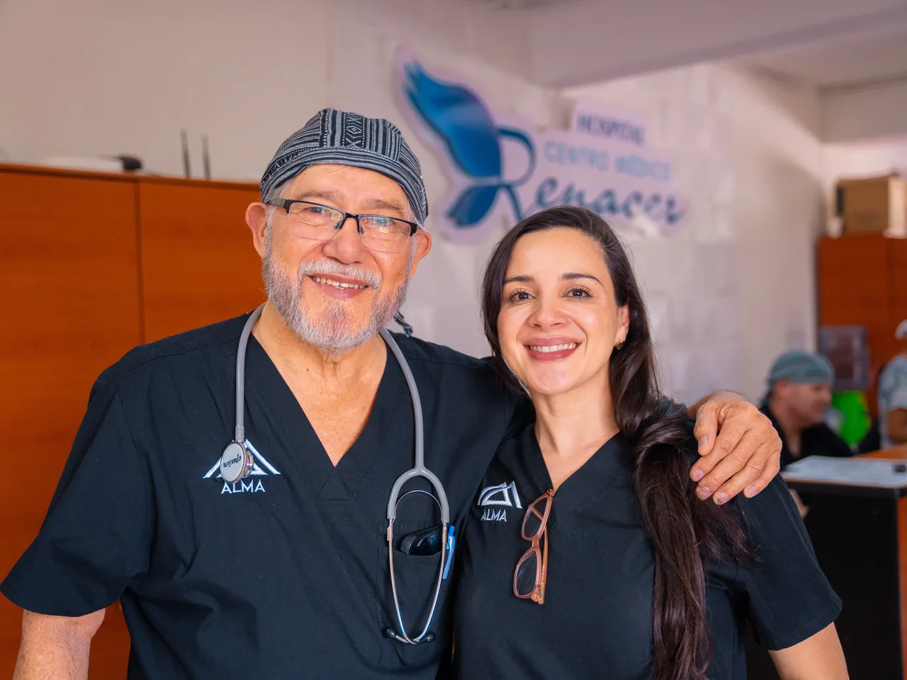
Mike Oswald, CRNA, of Anesthesia Associates of Coeur d'Alene, begins caring for patients in Guatemala.
Mike Oswald and Dra. Vicky Loza found ALMA to link volunteers, including Kootenai Health medical staff, with the medical team at a clinic in Xela.
On Dr. Patrick Mullen's first ALMA trip, he operates on Ebelinda, a two-and-a-half-year-old born with syndactyly (webbed fingers) on both hands.
Coeur d'Alene turns out to dance for Guatemala, and the event becomes an annual tradition.
Supporters raise $36,243, well past the $25,000 goal.
ENT and general surgery in April, arthroscopy, GI and gynecology in June, and total joints in October.
How we work
We operate with Guatemalan surgeons at Centro Médico Renacer and support local staff year-round, so care continues after we fly home.
Full surgical teams, anesthesia providers and recovery nurses travel together, so every patient gets the standard of care we would want for our own families.
No paid U.S. staff and very low overhead mean your gift goes almost entirely to direct care in Guatemala.

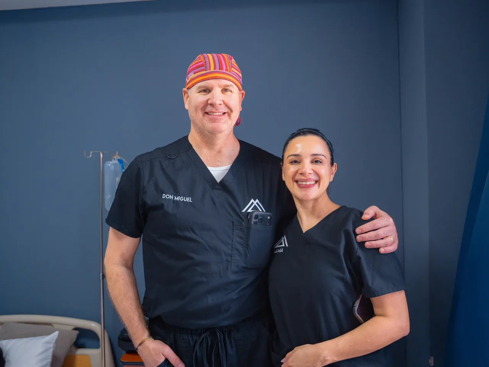
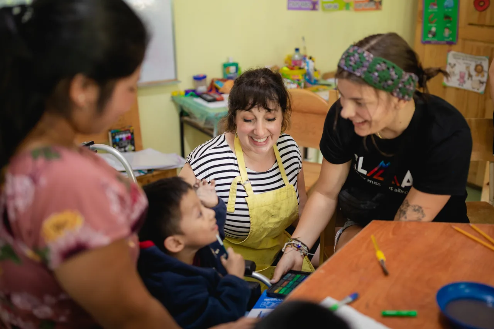
Our mission
ALMA strives to provide quality medical care to underserved areas of Guatemala. Through community outreach and collaboration with local professionals, ALMA seeks positive and effective outcomes for every individual served.
Core focus areas
Delivering surgeries and clinical procedures to rural and vulnerable populations in regions like Sololá and other parts of Guatemala.
Partnering directly with local doctors, nurses and regional specialists for bilateral training and sustainable community support.
Emphasizing holistic patient intake, empathy and long-term recovery support alongside physical procedures.
Meet our team
ALMA's team in Guatemala and the U.S. works year-round so every mission week runs safely and every patient is cared for after we leave.
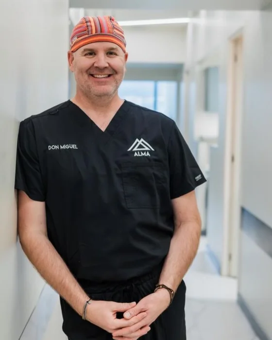
President, Founder
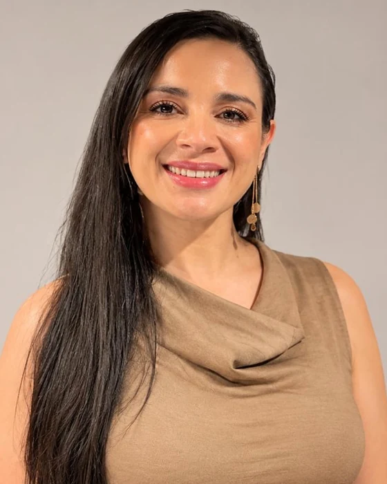
Director
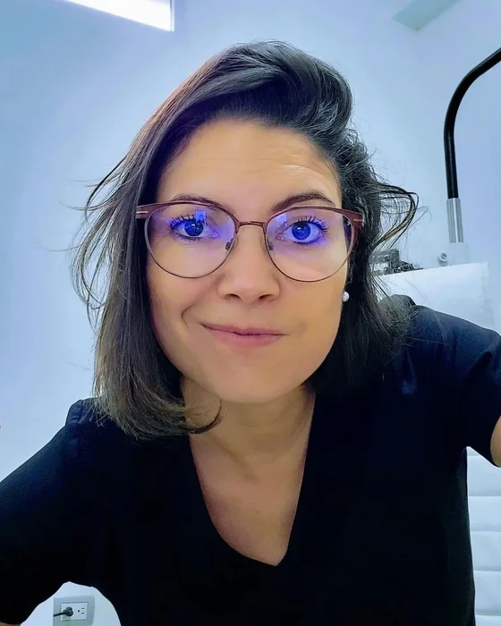
Founder, Ophthalmologist

Social Worker

General Surgeon
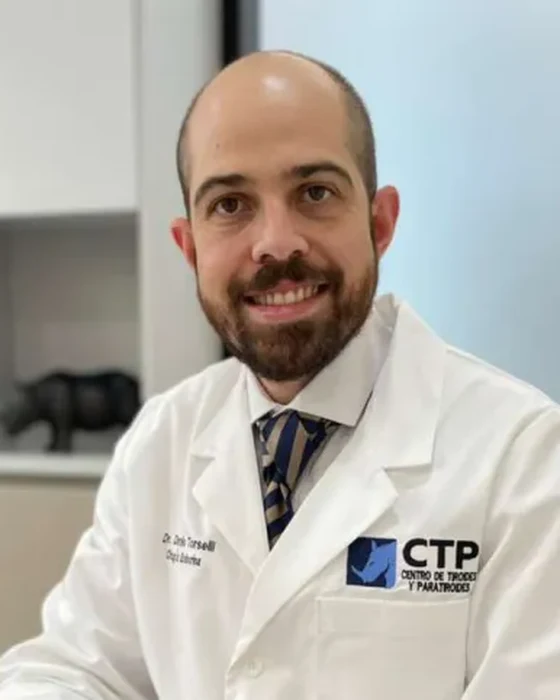
Endocrine Surgeon
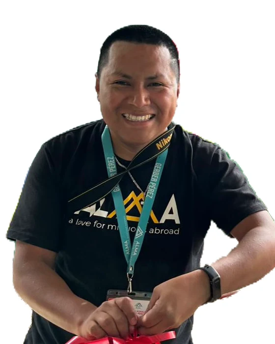
Marketing and Publicity
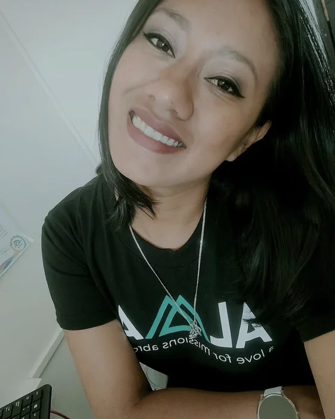
Nursing Coordinator
Driver
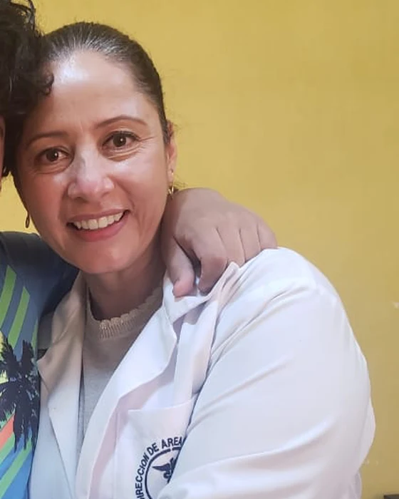
Dentist
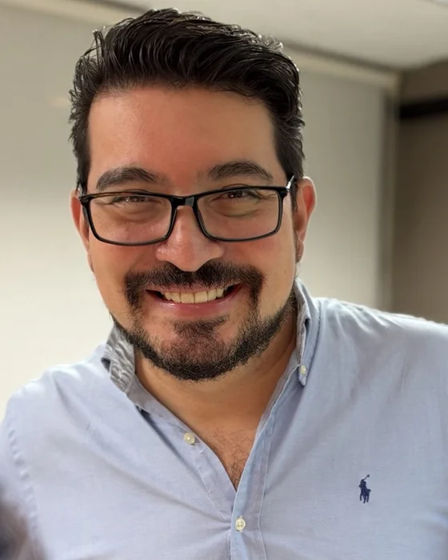
Orthopedic Surgeon
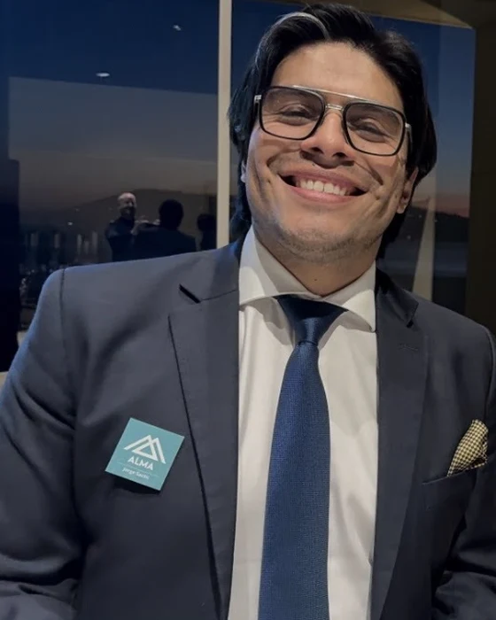
Attorney and Board Member
Aligned with the American College of Surgeons
ALMA's way of working grew out of years of trips to Guatemala, before we had read the American College of Surgeons' writing on ethical global surgery. When we did, we found we had independently arrived at the same principles.
“Equitable partnerships that are community-centered, needs-based, and collaborative.” Source
We work side by side with Guatemalan physicians and nurses, teaching and learning from each other.
Cautions against visiting teams working without “local provider and community engagement.” Source
Every surgical patient is evaluated and optimized before surgery by local Guatemalan surgeons.
Warns that operating “without the appropriate postoperative plan may result in harm.” Source
Local surgeons and anesthesia providers follow every patient after the team flies home.
ACS H.O.P.E. aims to “exchange knowledge across borders and specialties.” Source
Continuing education, a medical school elective and long-term placements for students.
Flags the risks of “a lack of transparent financing.” Source
No paid U.S. staff, very low overhead, and costs kept as low as possible.
ALMA is not affiliated with or endorsed by the American College of Surgeons. Quotes are from the ACS Bulletin article “Globalization of Healthcare Creates Evolving Ethical Dilemmas” (April 2023) and the ACS H.O.P.E. program page.
Why ALMA exists
In Guatemala's highlands, many clinics don't have the staff, the medication or the instruments they need. ALMA fills that gap with volunteer surgeons, anesthesia providers and nurses who serve alongside Guatemalan professionals, then keep supporting them all year.


What we do
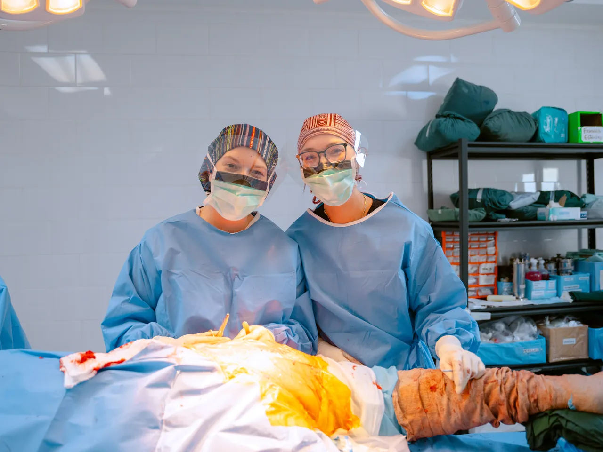
U.S. surgical teams operate side by side with Guatemalan surgeons, three times a year.
See the missions
Cataract surgery gives patients their independence and their livelihood back. After surgery, donors receive a report and a photo from our social worker.
Support this
Dental checkups and care for children in communities where dental care is hard to reach.
See the dental programSupplies and a playground for Escuela Vuelta Grande, and support for a special needs school.
Give: School and Playground SuppliesServe on a surgical team, sponsor a volunteer, or give so one more patient can walk, see, or eat without pain.